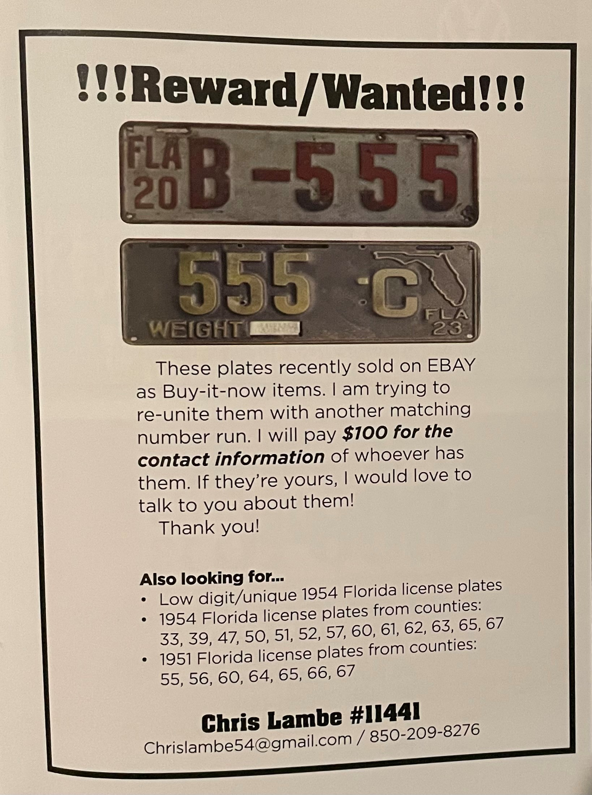

|  | Most contact between license plate collectors is through connections which can be built while collecting or while attending events. It is not unheard of to ask a license plate seller for the contact info of a buyer of a given license plate to inquire about purchasing or trading for that specific plate. Some people may put out bounties for certain plates, giving money to anyone who can find the contact info of the person who owns the plate. |
The ALPCA also has its own system for members to discuss and trade plates, through the email alpca-discuss@lists.alpca.org.